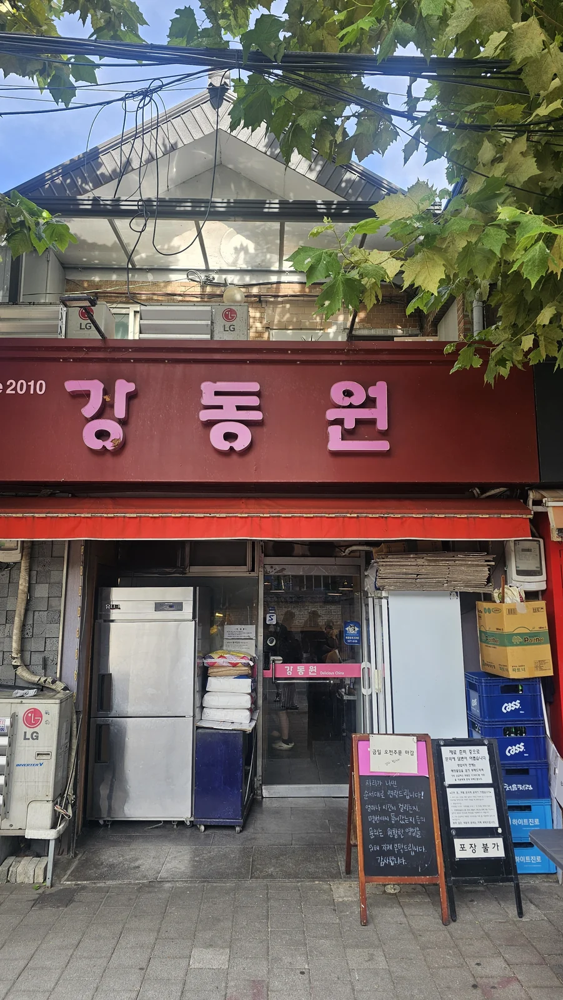
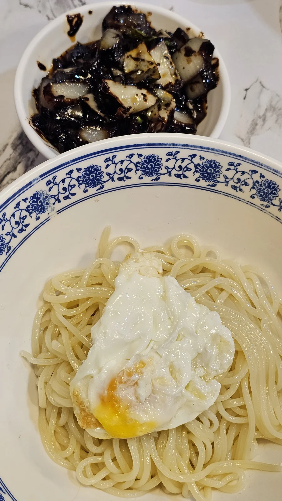
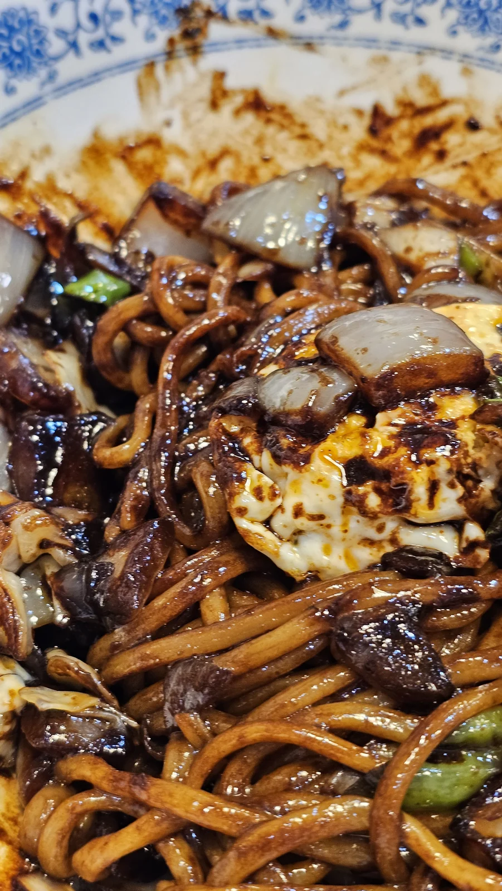
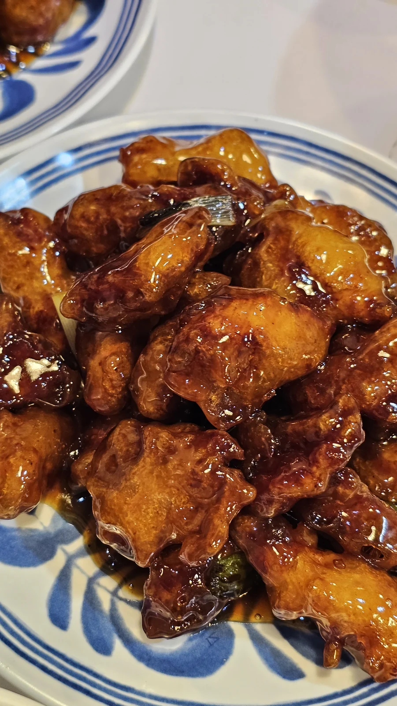
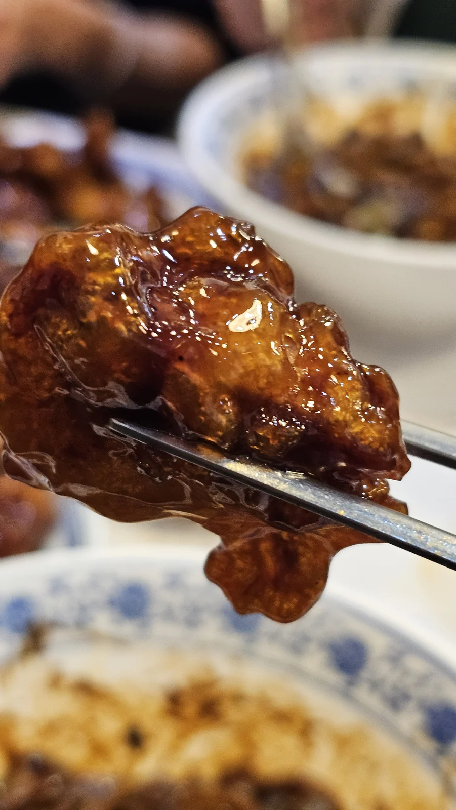

강동원
망원에 있는 중식당 강동원에 다녀왔습니다. 간짜장과 안심탕수육 중짜를 주문했고, 특히 바삭한 탕수육이 기억에 남았습니다.

1) 강동원 소개 및 주차
방문일: 2026년 10월 3일 토요일
주차: 가게 바로 앞 공영주차장 이용
웨이팅 등록: 방문 당시 오전 8시부터 가능
차는 가게 바로 앞 공영주차장에 댔습니다. 노포라고 들었던 곳인데 직접 가보니 청결했고, 사장님도 친절하셔서 좋았습니다.
오전 8시 20분에 도착했을 때 12번째였고, 실제 입장은 오전 11시 30분에 했습니다.
2) 메뉴 & 맛
간짜장과 안심탕수육 중짜를 주문했습니다.
온라인 메뉴 안내 가격은 간짜장 9,500원, 안심탕수육(중) 27,000원입니다.
2026년 10월 4일 확인한 참고 가격으로, 방문 당시 실제 결제 금액과는 다를 수 있습니다. 출처: 레빗 가이드 메뉴 · 다이닝코드 메뉴
간짜장은 고추가 들어간 스타일이었습니다. 맛은 괜찮았지만, 사람들이 그렇게 환호할 정도인지는 개인적으로 잘 모르겠다는 생각이 들었습니다.
맛있게 먹기는 했지만, 이날 두 메뉴 중에서 다시 먹고 싶은 쪽을 고르라면 저는 탕수육을 고르겠습니다.


안심탕수육을 먹으니 왜 ‘탕후루 탕수육’이라고 부르는지 알 것 같았습니다. 무엇보다 탕수육이 정말 바삭해서 맛있었습니다.
제게는 이 바삭한 식감이 강동원에서 가장 인상적인 부분이었습니다. 긴 웨이팅을 하고 들어갔지만, 탕수육만 먹으러 다시 방문해도 될 정도로 마음에 들었습니다.


3) 아쉬운 점
이날 가장 아쉬웠던 점은 긴 웨이팅입니다. 오전 8시 20분에 도착해 오전 11시 30분에 들어갔으니, 도착부터 입장까지 3시간 10분이 걸렸습니다. 이른 시간에 가도 바로 식사할 수 있었던 것은 아니었습니다.
간짜장도 맛은 괜찮았지만, 개인적으로 사람들이 그렇게 환호할 정도라고 느끼지는 않았습니다.
4) 결론 한 줄(👍 추천)
바삭한 안심탕수육만 먹으러 다시 가도 좋겠다고 생각한 곳입니다.
청결한 가게와 친절한 사장님도 좋았습니다. 다음에는 탕수육과 함께 짬뽕이나 흑후추돈육덮밥도 먹어보고 싶습니다.